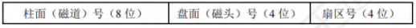
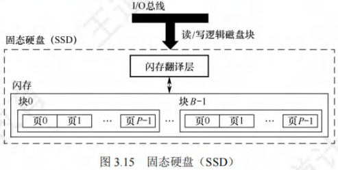

外部存储器
[toc]
磁盘存储器
磁盘存储器是以磁盘为存储介质的存储器。
-
优点：
- 存储容量大，位价格低。
- 记录介质可重复使用。
- 记录信息可长期保存而不丢失，甚至可脱机存档。
- 非破坏性读出，读出时不需要再生。
-
缺点：存取速度慢，机械结构复杂，对工作环境要求较高。
磁盘存储器
磁盘设备的组成
磁盘存储器由磁盘驱动器、磁盘控制器和盘片组成。
- 磁盘驱动器：驱动磁盘转动并在盘面上通过磁头进行读/写操作的装置，如图3.14所示。
- 磁盘控制器：磁盘驱动器与主机的接口，负责接收并解释CPU发来的命令，向磁盘驱动器发出各种控制信号，并负责检测磁盘驱动器的状态。
- 存储区域：一个磁盘含有若干记录面，每个记录面划分为若干圆形的磁道，而每条磁道又划分为若干扇区，扇区(也称块)是磁盘读/写的最小单位即磁盘按块存取。
- 磁头数(Heads)：即记录面数，表示磁盘共有多少个磁头，磁头用于读取/写入盘片上记录面的信息，一个记录面对应一个磁头。
- 柱面数(Cylinders)：表示磁盘每面盘片上有多少条磁道。在一个盘组中，不同记录面的相同编号(位置)的诸磁道构成一个圆柱面。
- 扇区数(Sectors)：表示每条磁道上有多少个扇区。
- 相邻磁道及相邻扇区间通过一定的间隙分隔开，以避免精度错误。由于扇区按固定圆心角度划分，因此位密度从最外道向里道增加，磁盘的存储能力受限于最内道的最大记录密度。
- 磁盘高速缓存(Disk Cache)：在内存中开辟一部分区域，用于缓冲将被送到磁盘上的数据。优点：写磁盘时是按“簇”进行的，可以避免频繁地用小块数据写盘；有些中间结果数据在写回磁盘之前可被快速地再次使用。
磁记录原理
- 原理：磁头和磁性记录介质相对运动时，通过电磁转换完成读/写操作。
- 编码方法：按某种方案(规律)，把一连串的二进制信息变换成存储介质磁层中一个磁化翻转状态的序列，并使读/写控制电路容易、可靠地实现转换。
磁记录方式：通常采用调频制(FM)和改进型调频制(MFM)的记录方式。
磁盘的性能指标
-
记录密度：
- 记录密度是指盘片单位面积上记录的二进制信息量，通常以道密度、位密度和面密度表示。
- 道密度是沿磁盘半径方向单位长度上的磁道数，位密度是磁道单位长度上能记录的二进制代码位数，面密度是位密度和道密度的乘积。
-
磁盘的容量：
- 磁盘容量有非格式化容量和格式化容量之分。
- 非格式化容量是指磁记录表面可利用的磁化单元总数
- 非格式化容量 = 记录面数×柱面数×每条磁道的磁化单元数。
- 格式化容量是指按照某种特定的记录格式所能存储信息的总量
- 格式化容量 = 记录面数×柱面数×每道扇区数×每个扇区的容量。
- 格式化后的容量比非格式化容量要小。
-
存取时间：
-
三部分构成
- 存取时间由寻道时间(磁头移动到目的磁道的时间)
- 旋转延迟时间(磁头定位到要读/写扇区的时间)
- 传输时间(传输数据所花费的时间)三部分构成。
-
因为寻道和找扇区的距离远近不一，所以寻道时间和旋转延迟时间通常取平均值(平均寻道时间取从最外道移动到最内道时间的一半，平均旋转延迟时间取旋转半周的时间)。
-
-
数据传输速率：
- 磁盘存储器在单位时间内向主机传送数据的字节数，称为数据传输速率。
- 假设磁盘转数为转/秒，每条磁道容量为字节，则数据传输速率为。
磁盘地址
主机向磁盘控制器发送寻址信息，磁盘的地址一般如下图所示。
若磁盘有16个盘面，每个盘面有256个磁道，每个磁道划分为16个扇区，则每个扇区地址要16位二进制代码，其格式如下图所示。

磁盘的工作过程
- 磁盘的主要操作是寻址、读盘、写盘。
- 每个操作都对应一个控制字，磁盘工作时，第一步是取控制字，第二步是执行控制字。
- 磁盘属于机械式部件，其读/写操作是串行的，不可能在同一时刻既读又写，也不可能在同一时刻读两组数据或写两组数据。
磁盘阵列
-
RAID(独立冗余磁盘阵列)是指将多个独立的物理磁盘组成一个独立的逻辑盘，数据在多个物理盘上分割交叉存储、并行访问，具有更好的存储性能、可靠性和安全性。
-
RAID的分级如下所示。在RAID1~RAID5几种方案中，无论何时有磁盘损坏，都可随时拔出受损的磁盘再插入好的磁盘，而数据不会损坏，提升了系统的可靠性。
-
RAID0：无冗余和无校验的磁盘阵列。
-
RAID1：镜像磁盘阵列。
-
RAID2：采用纠错的海明码的磁盘阵列。
-
RAID3：位交叉奇偶校验的磁盘阵列。
-
RAID4：块交叉奇偶校验的磁盘阵列。
-
RAID5：无独立校验的奇偶校验磁盘阵列。
-
-
RAID0把连续多个数据块交替地存放在不同物理磁盘的扇区中，几个磁盘交叉并行读/写，即条带化技术，这样不仅扩大了存储容量，还提高了磁盘存取速度，但RAID0没有容错能力。
-
为了提高可靠性，RAID1使两个磁盘同时进行读/写，互为备份，若一个磁盘出现故障，可从另一磁盘中读出数据。两个磁盘当一个磁盘使用，意味着容量减少一半。
-
总之，RAID通过同时使用多个磁盘，提高了传输速率；通过在多个磁盘上并行存取来大幅提高存储系统的数据吞吐量；通过镜像功能，提高安全可靠性；通过数据校验，提供容错能力。
固态硬盘
固态硬盘的特性
- 固态硬盘(SSD)是一种基于闪存技术的存储器。
- 它与U盘并无本质差别，只是容量更大，存取性能更好。
- 一个SSD由一个或多个闪存芯片和闪存翻译层组成，如图3.15所示。
- 闪存芯片替代传统旋转磁盘中的机械驱动器，而闪存翻译层将来自CPU的逻辑块读/写请求翻译成对底层物理设备的读/写控制信号，因此，这个闪存翻译层相当于代替了磁盘控制器的角色。

-
在图3.15中，一个闪存由块组成，每块由页组成。
- 通常，页的大小是，每块由页组成，块的大小为。
- 数据是以页为单位读/写的。只有在一页所属的块整个被擦除后，才能写这一页。
- 不过，一旦一个块被擦除，块中的每个页就都可以直接再写一次。
- 某个块进行了若干次重复写之后，就会磨损坏，不能再使用。
-
随机写很慢，有两个原因。首先，擦除块较慢，通常比访问页高一个数量级。
-
其次，若写操作试图修改一个包含已有数据的页，则这个块中所有含有用数据的页都必须被复制到一个新(擦除过的)块中，然后才能进行对页的写操作。
-
比起传统磁盘，SSD有很多优点，它由半导体存储器构成，没有移动的部件，因而随机访问时间比机械磁盘要快很多，也没有任何机械噪声和振动，能耗更低，抗震性好，安全性高等。
磨损均衡(Wear Leveling)
-
固态硬盘也有缺点，闪存的擦写寿命是有限的，一般是几百次到几千次。
- 若直接用普通闪存组装SSD，则实际的寿命表现可能非常令人失望——读/写数据时会集中在SSD的一部分闪存，这部分闪存的寿命会损耗得特别快。
- 一旦这部分闪存损坏，整块SSD也就损坏了。这种磨损不均衡的情况，可能会导致一块的SSD，只因数兆字节空间的闪存损坏而整块损坏。
-
为了弥补SSD的寿命缺陷，引入了磨损均衡。SSD磨损均衡技术大致分为两种:
- 动态磨损均衡：写入数据时，自动选择较新的闪存块。老的闪存块先歇一歇。
- 静态磨损均衡：这种技术更为先进，就算没有数据写入，SSD也会监测并自动进行数据分配，让老的闪存块承担无须写数据的存储任务，同时让较新的闪存块腾出空间，平常的读/写操作在较新的闪存块中进行。各个闪存块的寿命损耗就都差不多。
-
有了这种算法加持，SSD的寿命就比较可观了。例如，对于一个的SSD，若闪存的擦写寿命是次，则需要写入数据，才寿终正寝。就算每天写入数据，也要三十多年才能将闪存磨损坏，更何况很少有人每天往SSD中写入数据。